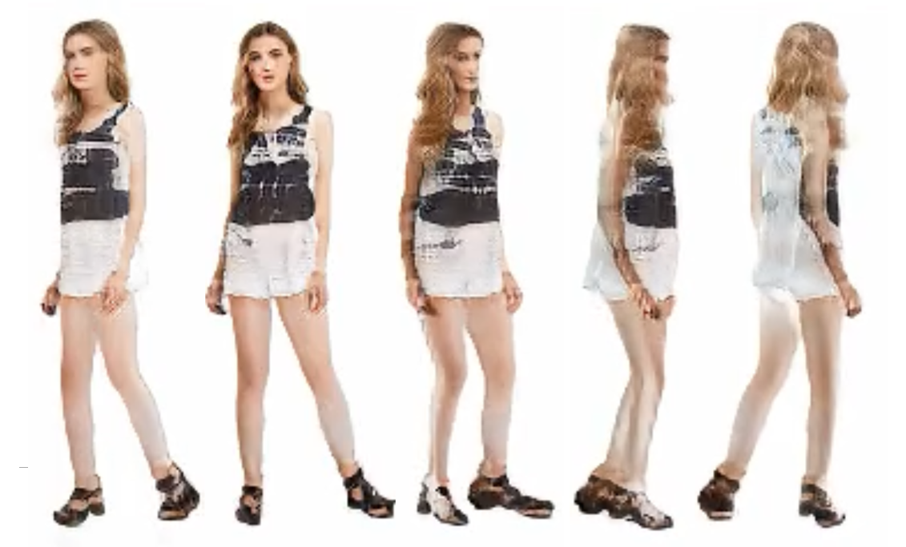

AI

Claude Spy: A Visual Timing Monitor for Claude Code
A small local tool I wrote that parses Claude Code session logs and breaks down where the time goes in each request.

Research on 3D-Consistent Human Image Generation Based on Orthogonal Planes
My undergraduate thesis: replacing the tri-plane representation of a GAN-based human generation model with orthogonal planes to improve generation quality.